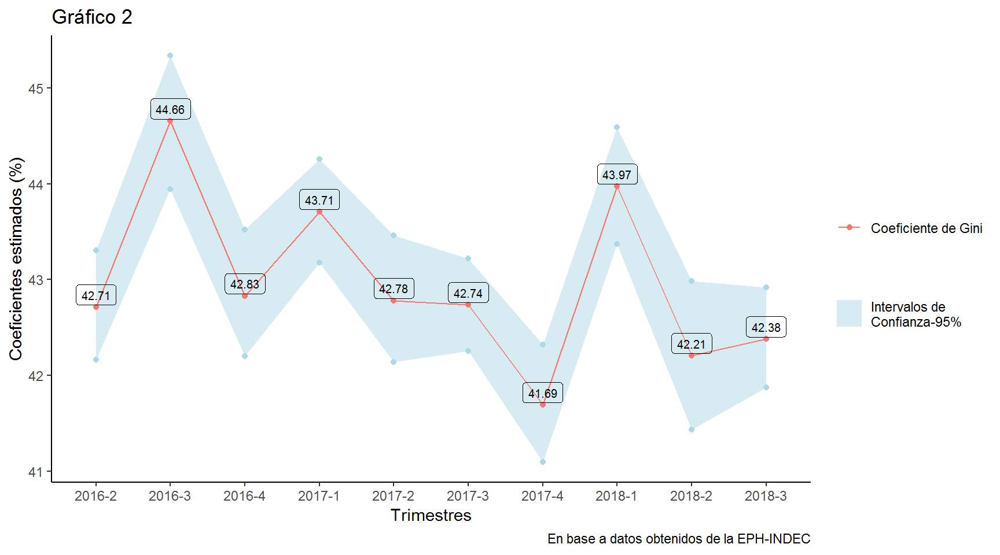

Teniendo cómo referencia la última EPH disponible a la fecha, la del tercer trimestre del 2018, a continuación se compararán diversas medidas de desigualdad monetaria, ampliando un poco más el espectro de análisis de los indicadores sociales disponibles.
Fueron utilizados los paquetes laeken1 y convey2 del software R. He citado las referencias correspondientes en las notas al final de página.
El índice de Gini es una de las medidas más extendidas para calcular la desigualdad en la distribución del ingreso y es muy utilizado para realizar comparaciones entre otros países. Habitualmente se obtiene relacionando el área entre la curva de Lorenz y la línea de perfecta igualdad(LPI).
La curva de Lorenz puede ser vista cómo la participación en el ingreso total de una proporción dada(\(\alpha\)) de la población,ordenada desde los más pobres hasta los más ricos. La LPI , a su vez, puede ser considerada la curva de Lorenz de una distribución del ingreso perfectamente igualitaria, \(L(\alpha)=\alpha\) (Langel 2012)3 En el gráfico 1 se ejemplifica para el tercer trimestre del 2018:
El 50 % de la población con menores ingresos reúne alrededor del 21% del ingreso total.
El índice de Gini es igual a dos veces el área entre la LPI y la curva de Lorenz: \[ G = 2 \int_{0}^{1} [\alpha - L(\alpha)]d\alpha = 1 - 2 \int_{0}^{1} L(\alpha)d\alpha\]
Cuando la distribución es completamente igualitaria, el valor del coeficiente de Gini es 0. En el otro extremo, el hipotético caso en que un sólo un individuo concentrara todo el ingreso en su persona, el valor del coeficiente de Gini alcanzaría el uno.
No existen ventajas empíricas del cálculo del coeficiente de Gini en base a las discrepancias promedio de ingreso(en valor absoluto) en relación a la fórmula alternativa relacionada con la curva de Lorenz, cómo señala Walter Sosa Escudero4 en su nota , ya que de cualquier manera se obtienen indicadores de Gini consistentes.

En el gráfico dos se computaron los coeficientes de Gini para la serie completa de la EPH tras la emergencia estadística. Se utilizó cómo variable al ingreso per cápita familiar (IPCF), la misma variable empleada para construir la curva de Lorenz del gráfico anterior. Dado que los intervalos de confianza estimados mediante un bootstrap simple de 1000 repeticiones se superponen para el segundo y tercer trimestre de 2018, el aumento en el coeficiente de Gini estimado para el último trimestre no sería significativo.
Una propiedad que se le exige a un índice de desigualdad es ser consistente ante las descomposiciones por grupos: si entre dos distribuciones la desigualdad en cada grupo (within inequality )medida por el índice no decrece y la desigualdad entre grupos tampoco cae(between inequality),la desigualdad agregada medida por dicho íncide no puede disminuir.
El coeficiente de Gini no cumple con esta propiedad, aunque si puede ser descuempuesto por fuentes, por ejemplo, diversos tipos de ingreso.
En el siguiente cuadro no se realiza una descomposición por fuente de ingreso del coeficiente de Gini, pero se compara la estimación original con la obtenida en el caso de otras dos variables monetarias:
| IPCF | Ingreso total Individual | Ingreso de la ocupación principal |
|---|---|---|
| 0.424 | 0.423 | 0.384 |
\[A(\epsilon) = 1- \frac{[\frac{1}{N} \sum_{i=1} x_i^{1-\epsilon}]^ \frac{1}{1-\epsilon}}{\mu}\] , con \(\epsilon\) mayor e igual a cero y diferente de uno y \(\mu\) el ingreso medio.
Cuando \(\epsilon\) toma el valor de uno, A es igual a 1 menos el ratio de la media geométrica y aritmética: \[A(1)=1-\frac{exp{E(log(x_i))}}{\mu}\]
El índice de Atkinson, un caso especial del índice de entropía, permite sumar una caracteristica al análisis, la importancia que le da el evaluador(la ponderación) a la diferencia en los ingresos. Gasparini et al(2013)5 mencionan una interpretación de este indice: La proporción del ingreso que el evaluador estaría dispuesto a sacrificar para alcanzar una distribución igualitaria.
El índice de Atkinson también es una suma ponderada de los ingresos de las personas, pero aquí el ponderador viene dado por elección del parámetro \(\epsilon\),de aversión a la desigualdad.
Cuando mayor es \(\epsilon\) más relevancia se le otorga a las transferencias en el extremo inferior de la distribución, por ende, si epsilon tiende a infinito, el índice vale 1 toda vez que alguien tenga un ingreso cero. Dicho esto, en la práctica se suelen eliminar los ingresos cero antes de iniciar el análisis correpondiente (Gasparini et al 2013).
Puede observarse en el gráfico 3 cómo aumenta el índice de Atkinson mientras se incrementa el valor de epsilon, para valores del IPCF obtenidos de la EPH del tercer trimestre del 2018.
\[GE(\epsilon)= 1 -[(\epsilon^2 - \epsilon)E(1-\epsilon)+1]^\frac{1}{1-\epsilon}\]
Este indicador posee propiedades interesantes,el principio de Dalton-Piguou(ante una transferencia de ingresos igualadora, el indicador no debe aumentar),invarianza a la escala y a las replicas, pero a diferencia del coeficiente de Gini,es consistente ante las descomposiciones.
Las descomposiciones pueden presentarse cómo la simple suma de dos términos, la desigualdad entre grupos,y un promedio ponderado de la desigualdad dentro de cada grupo.
| Variable | Total | Within | Between | Within (%) | Between (%) |
|---|---|---|---|---|---|
| IPCF | 0.30 | 0.24 | 0.06 | 80.23 | 19.77 |
| Ingreso total Individual | 0.31 | 0.25 | 0.06 | 80.98 | 19.02 |
| Ingreso de la ocupación principal | 0.26 | 0.22 | 0.04 | 84.84 | 15.16 |
En promedio, alrededor del 20% de la desigualdad del ingreso per capita familiar total corresponde a diferencias entre niveles educativos, mientras que el 80% restante corresponde a la desigualdad interna de cada grupo. La situación es similar para la sumatoria de ingresos laborales y no laborales. En el caso del ingreso por la ocupación principal,sólo el 15% de la desigualdad corresponde a las diferencias entre grupos educativos. El cálculo del indicador está dado para un valor de \(\epsilon\) de 0.5. Los niveles educativos considerados son siete, sin instrucción,primaria incompleta(incluyendo educación especial, primaria completa, secundaria incompleta,secundaria completa,superior incompleto y finalmente superior completo.
El valor del índice de entropía, es el doble del obtenido mediante el índice de Atkison(0.14) considerando un epsilon de 0.5, en el caso de todos los individuos de la muestra con IPCF positivo.
| Variable | Total | Within | Between | Within (%) | Between (%) |
|---|---|---|---|---|---|
| IPCF | 0.35 | 0.28 | 0.07 | 80.97 | 19.03 |
| Ingreso total Individual | 0.34 | 0.28 | 0.06 | 81.85 | 18.15 |
| Ingreso de la ocupación principal | 0.26 | 0.22 | 0.04 | 84.78 | 15.22 |
Con un valor del coeficiente de aversión a la desigualdad mayor(\(\epsilon = 1.5\)), las diferencias entre los grupos educativos no cambian su participación, sin embargo, ahora el valor total de desigualdad del índice de entropía general es menor al valor del índice de Atkinson(0.389), reflejando la mayor sensibilidad de éste último para aumentos en el parámetro epsilon.
A. Alfons and M. Templ (2013) Estimation of Social Exclusion Indicators from Complex Surveys: The R Package laeken. Journal of Statistical Software, 54(15), 1–25. URL http://www.jstatsoft.org/v54/i15/↩
Income Concentration Analysis with Complex Survey Samples, https://cran.r-project.org/package=convey↩
Matti Langel (2012). Measuring inequality in finite population sampling. PhD thesis: Universite de Neuchatel, https://doc.rero.ch/record/29204/files/00002252.pdf..↩
Sosa Escudero, W. (2018). A note on a simple interpretation of the Gini coefficient. Económica, LaPlata, Vol.LXIV, Nro.1, 2018.↩
Gasparini,L. , Cicowiez, M. y Sosa Escudero, W. (2013). Pobreza y Desigualdad en América Latina. Conceptos, Herramientas y Aplicaciones. Editorial Temas. (http://www.cedlas.econo.unlp.edu.ar/wp/en/publicaciones/libros/pobreza-y-desigualdad-en-america-latina/)↩